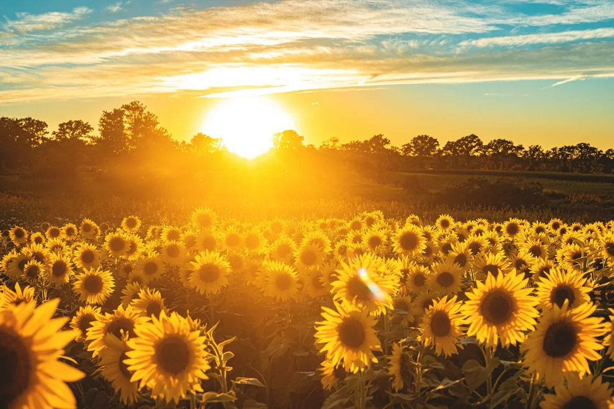
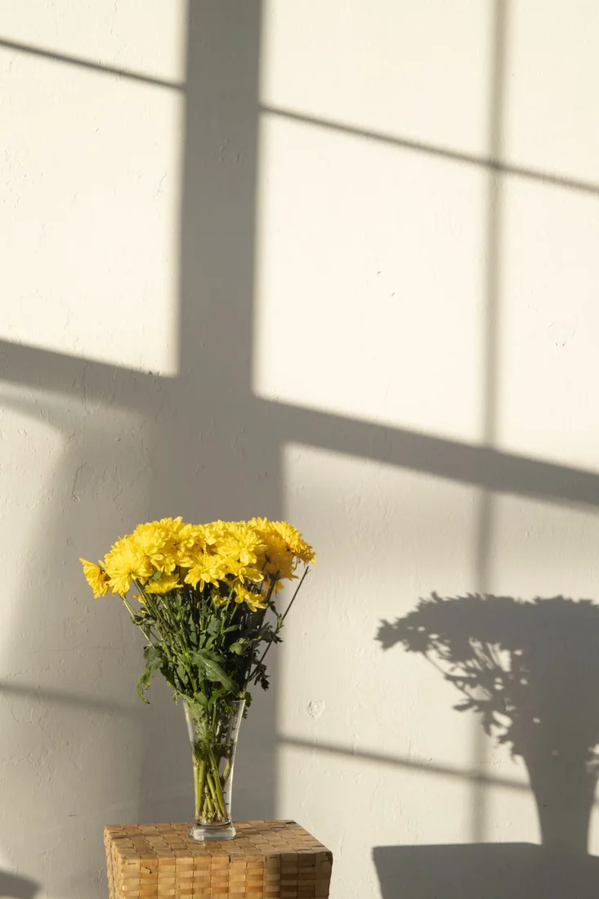

01 / UN RAMO, SOLO PARA TI
Dicen que hoy se regalan flores amarillas...
Así que estas
son para ti,
amiga.
Porque una amistad como la tuya
merece ser celebrada siempre.


ALGO BONITO QUE SE QUEDA
Este ramo
no se marchita.
Puedes volver aquí todas las veces que quieras.
Un ramo que se mueve contigo02 / LAS COSAS QUE NO CAMBIAN
Tres pequeñas razones.
Y mil más.
Hay cosas que quería que supieras.
03 / NUESTRO PEQUEÑO ÁLBUM
Instantes de sol.
Un lugar para nosotros.
Hoy, flores.
Mañana, todos esos recuerdos
que nos quedan por guardar.
Todavía nos quedan tantas cosas bonitas por vivir.
04 / DE MI PUÑO Y CORAZÓN
Hay algo más
que quería decirte.
Una carta que lleva un poquito de mí.
05 / TODO LO QUE HACES FLORECER
Mira lo que crece
cuando pienso en ti.
Cada flor guarda una razón. Toca una.
UNA AMISTAD INCONDICIONAL
En los buenos
y malos momentos......siempre estaré
aquí para ti.
Davidamiga
Gracias por tu valiosa amistad.
ANTES DE QUE TE VAYAS...